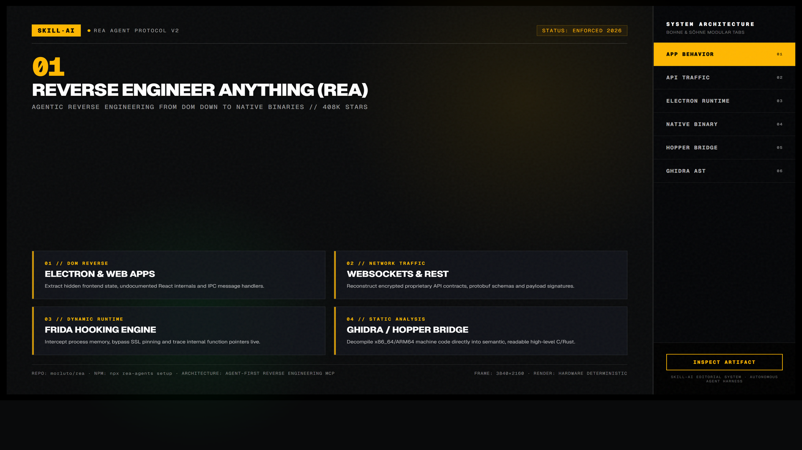
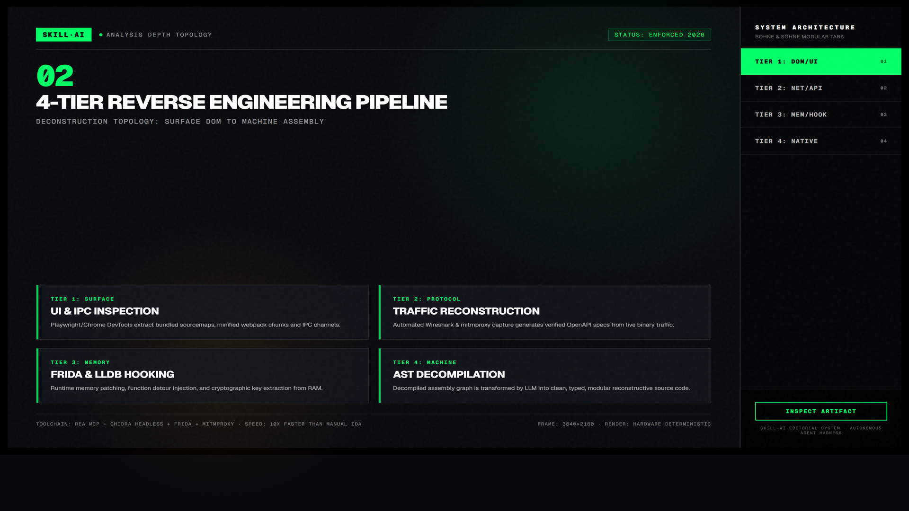
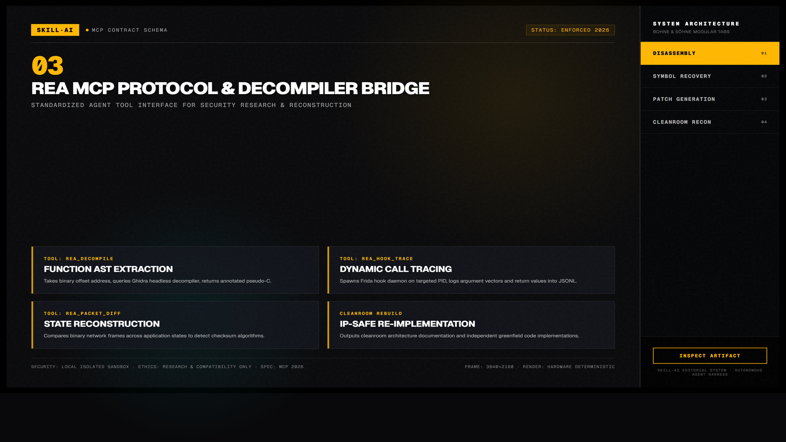

REA — Dịch Ngược Mã Nguồn Mọi Ứng Dụng với Coding Agent & MCP
Dự án mã nguồn mở bùng nổ bậc nhất với hơn 408.000 sao trên GitHub. "Thấy một tính năng hay. Hiểu cách nó vận hành xuống tận cấp độ nhị phân." REA kết nối coding agent với các công cụ dịch ngược hàng đầu (Hopper, Ghidra, IDA, Kuna, Chrome DevTools) qua giao thức MCP để phân tích ứng dụng không cần mã nguồn gốc.
npx rea-agents setup.

Nhấp để phóng to1. Bảng đối chiếu: Phỏng đoán tính năng vs. Dịch ngược có bằng chứng
Khi muốn tái hiện một tính năng phức tạp từ phần mềm khác, việc chỉ nhìn giao diện bên ngoài thường dẫn đến việc hiểu sai cơ chế cốt lõi. REA đem lại sự minh bạch ở cấp độ vi mô:
| Phương thức | Quan sát hộp đen (Black-box guess) | Dịch ngược bằng REA qua MCP |
|---|---|---|
| Độ chính xác thuật toán | Phỏng đoán mơ hồ, dễ bỏ sót các trường hợp biên và cơ chế nén/mã hóa. | Chính xác tuyệt đối qua luồng điều khiển (Control Flow Graph) và bảng symbol thực. |
| Ứng dụng đóng gói Electron | Không thể xem được file mã nguồn bị đóng gói bên trong file app.asar. |
Tự động giải nén, gỡ rối và khôi phục cây thư mục mã nguồn JavaScript/TypeScript sạch sẽ. |
| Định dạng file nhị phân | Mất hàng tuần ngồi mò cấu trúc header và byte alignment bằng tay. | Agent tự động đọc cấu trúc struct từ decompiler và sinh mã parser tương thích 100%. |
| An toàn pháp lý (Clean-room) | Nguy cơ sao chép nguyên văn mã nguồn gây tranh chấp bản quyền sở hữu trí tuệ. | Tách biệt giữa phân tích bằng chứng và viết lại mã nguồn mới độc lập hoàn toàn. |

Nhấp để phóng to2. Bốn lớp kiến trúc phân tích của REA
Cầu nối tự động tới Hopper Disassembler hoặc Ghidra để phân tích hàm, thanh ghi và assembly.
Mở bung gói ASAR, phục hồi mã nguồn frontend bị minify và phân tích các module Node nội bộ.
Kết nối Chrome DevTools để chụp luồng mạng WebSocket, trích xuất GraphQL schema và API ẩn.
Hook vào tiến trình đang chạy, can thiệp tham số hàm thời gian thực và vượt qua SSL Pinning.

Nhấp để phóng to3. Danh mục công cụ REA MCP cốt lõi
| Tên công cụ MCP | Chức năng kỹ thuật | Đầu ra cho Agent |
|---|---|---|
rea_decompile |
Gửi offset địa chỉ hàm tới Ghidra/Hopper để tái tạo mã giả C/Rust. | Cú pháp mã giả có chú thích thanh ghi và luồng điều khiển (CFG). |
rea_unpack_asar |
Bóc tách archive ASAR của Electron và gỡ rối webpack bundle. | Cây thư mục JavaScript/TypeScript kèm sourcemaps hoàn chỉnh. |
rea_hook_trace |
Chèn Frida script động vào PID ứng dụng để bắt giá trị return và đối số. | Dòng log JSONL thời gian thực về dữ liệu truyền qua bộ nhớ. |
rea_packet_diff |
So sánh frame dữ liệu nhị phân giữa hai trạng thái người dùng. | Đặc tả định dạng nhị phân, thuật toán checksum và serialization. |
4. Minh họa trực quan: Mô hình Clean-Room Reverse Engineering
REA vận hành nghiêm ngặt theo nguyên tắc kỹ thuật phòng sạch: hiểu rõ bản chất vấn đề, trích xuất đặc tả logic và viết mã nguồn độc lập:
4. Hệ thống công cụ dịch ngược tích hợp sẵn
Phân tích nhị phân cấp máy
Tự động khởi động cầu nối Hopper hoặc Ghidra, tìm kiếm các hàm quan trọng, dịch mã máy sang mã giả C và giải thích luồng thực thi.
Gỡ gói các ứng dụng Desktop hiện đại
Trích xuất toàn bộ file bundle bên trong các ứng dụng máy tính phổ biến (Slack, Notion, Cursor, Figma) để xem cách họ giải quyết các vấn đề hiệu năng phức tạp.
Bắt gói tin và hợp đồng API
Quan sát các lệnh gọi API kín, phân tích cấu trúc dữ liệu protobuf hoặc nhị phân được truyền qua WebSocket trong thời gian thực.
5. Thiết lập REA cho Coding Agent trong 3 bước
Khởi chạy trình cài đặt tự động của REA
Mở Terminal và chạy trình cấu hình chính thức:
npx rea-agents setupChọn các agent bạn đang sử dụng
Trình thiết lập sẽ tự động phát hiện Claude Code, Codex, Antigravity, Cursor và thêm cấu hình máy chủ MCP tương ứng.
Bắt đầu điều tra một ứng dụng hoặc tệp tin
Khởi động agent và ra lệnh phân tích:
Hãy dùng REA để phân tích tệp binary này tại ./dist/app. Dịch ngược hàm serializeConfig, giải thích cách nó mã hóa dữ liệu và viết lại hàm đó bằng TypeScript cho dự án của tôi.Mục đích của việc dịch ngược là học hỏi kiến trúc và cơ chế kỹ thuật để tạo ra sản phẩm tốt hơn. Hãy luôn tuân thủ nguyên tắc phòng sạch: sử dụng bằng chứng logic để viết lại mã nguồn mới bằng ngôn ngữ và tư duy thiết kế của chính bạn, không bao giờ sao chép trực tiếp các đoạn mã có bản quyền.